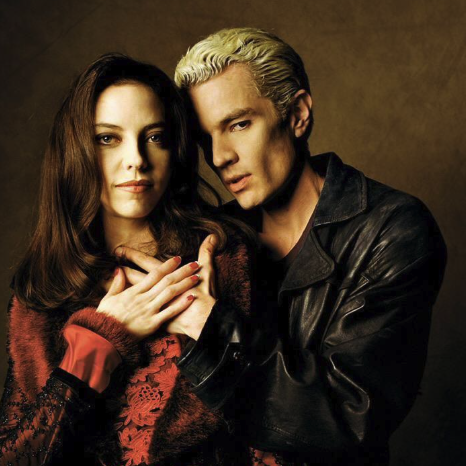

Drusilla
Juliet Landau plays the vampire Drusilla. Up until the episode "What's my line - part 2" she was very weak. However, during this episode she regained her powers with the help of Spike and her sire, Angel.
Dru is rumored to be very powerful when recovered and to make matters worse, she is stark raving mad. She was driven to madness in her mortal years by Angel, who killed all she loved and then turned her into the demon she is today.
A very bitter/mad Drusilla sums it up to Angel like this: "They used to eat cake, and eggs, and honey, until you came and ripped their throats out."
Has the slayer met her match?
Click for the Dru & Spike Gallery